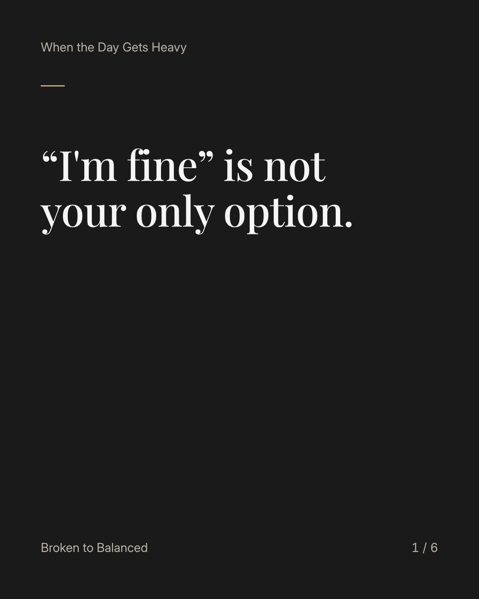
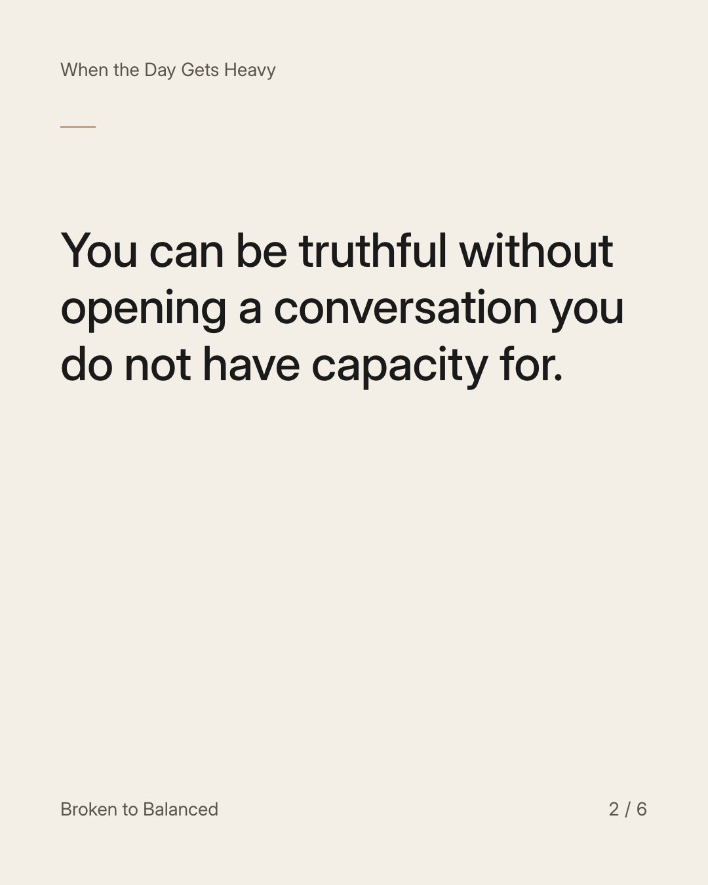
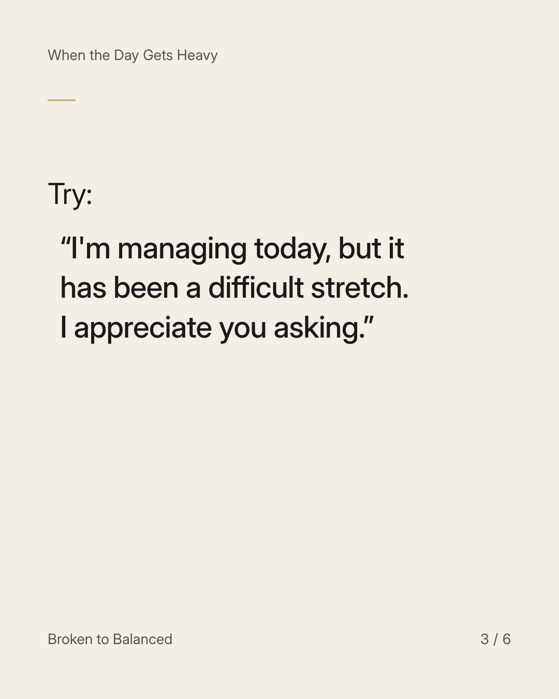
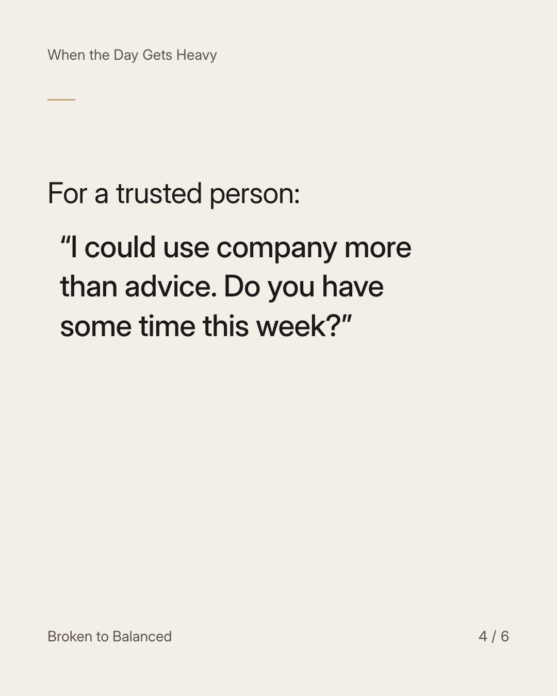
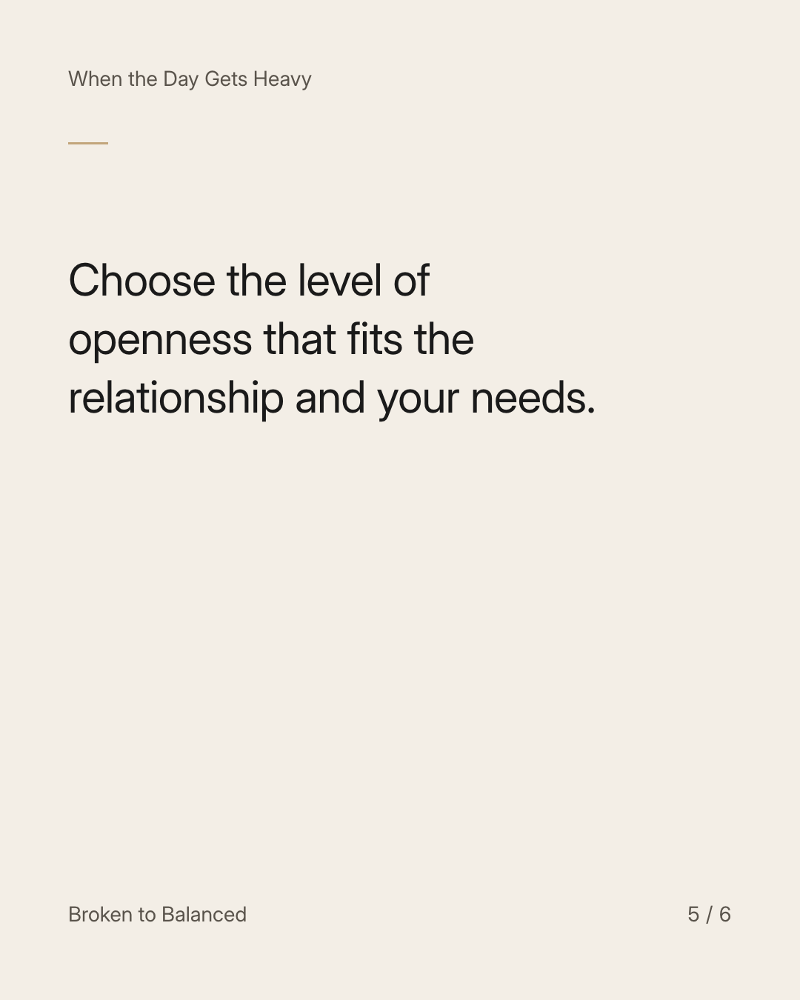
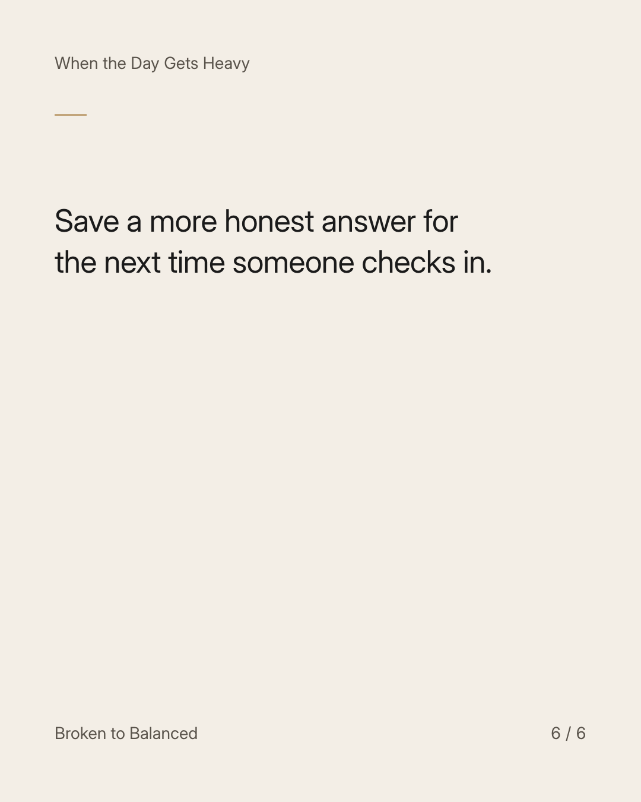

Exact text and accessibility text
“I'm fine” is not your only option.
Slide 1 of 6. “I'm fine” is not your only option.


Exact text and accessibility text
You can be truthful without opening a conversation you do not have capacity for.
Slide 2 of 6. You can be truthful without opening a conversation you do not have capacity for.


Exact text and accessibility text
Try: “I'm managing today, but it has been a difficult stretch. I appreciate you asking.”
Slide 3 of 6. Try: “I'm managing today, but it has been a difficult stretch. I appreciate you asking.”


Exact text and accessibility text
For a trusted person: “I could use company more than advice. Do you have some time this week?”
Slide 4 of 6. For a trusted person: “I could use company more than advice. Do you have some time this week?”


Exact text and accessibility text
Choose the level of openness that fits the relationship and your needs.
Slide 5 of 6. Choose the level of openness that fits the relationship and your needs.


Exact text and accessibility text
Save a more honest answer for the next time someone checks in.
Slide 6 of 6. Save a more honest answer for the next time someone checks in.
Exact caption
Plain-text fallback: select and copy the caption.